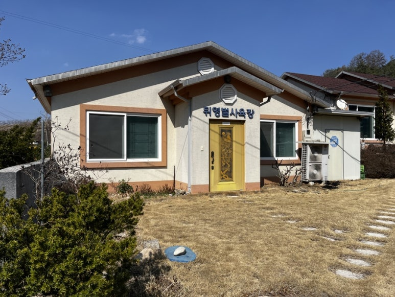
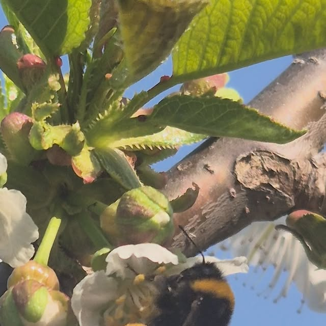
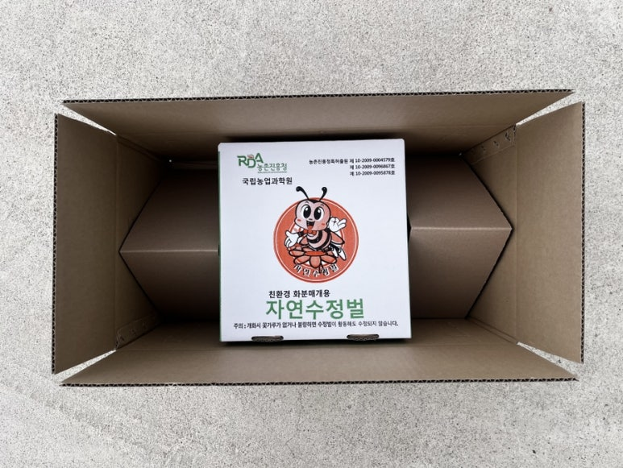
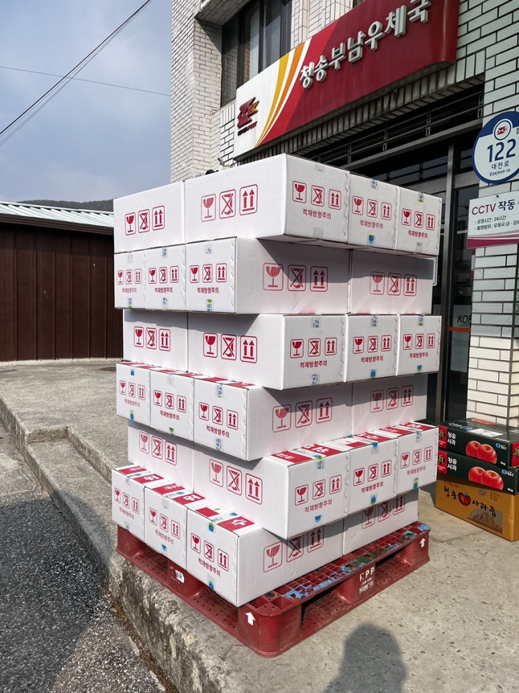
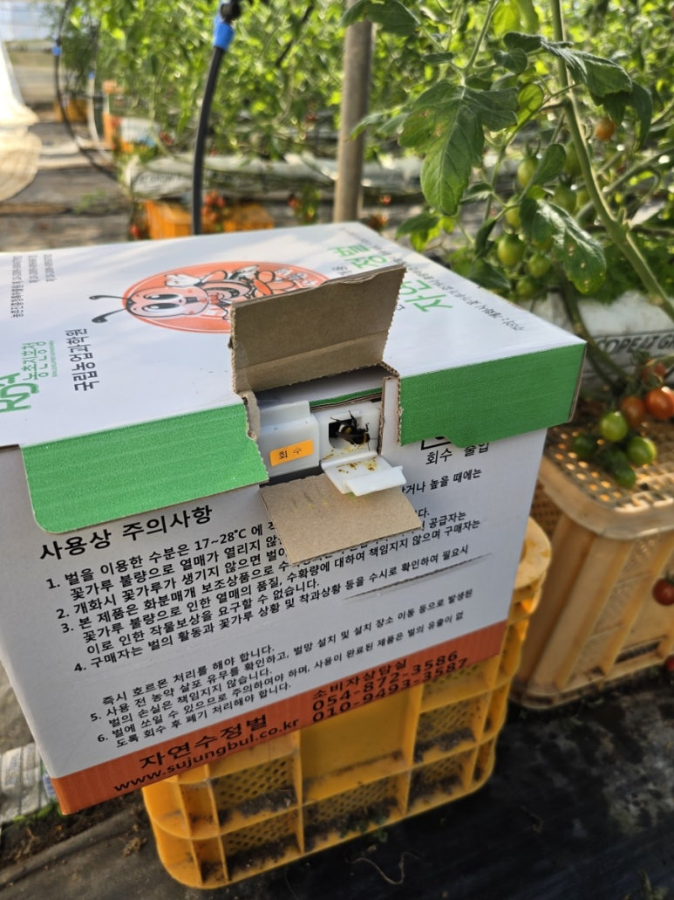

01사육
청송에서 이어가는 생산의 현장.
작은 날갯짓에서 시작되는 이야기
고품질 뒤영벌
통 당 130마리 내외

01 / FIND YOUR CROP
작물을 선택하고, 사용에 필요한 조건을 확인하세요.
같은 작물이어도 농장의 환경은 다릅니다.

02 / A LITTLE HELP FOR YOUR FARM
꽃과 재배 환경을 함께 살피고,
필요한 봉군과 공급 일정을 상담합니다.
처음 사용하는 농가도 차근차근 준비할 수 있도록.
03 / CARE IN EVERY STEP
청송의 사육장에서 농장의 꽃까지.
공급을 준비하는 과정과 현장의 모습을 만나보세요.

01청송에서 이어가는 생산의 현장.
02농장에 맞는 봉군과 공급 조건을 함께 확인합니다.

03농가로 향할 벌통의 포장 모습.

04희망 투입일과 공급 일정을 상담합니다.
04 / PEOPLE BEHIND THE WINGS
경북 청송에서 벌을 기르는 생산자와 가족.
작은 생명을 돌보는 시간은
농가와 함께하는 이야기로 이어집니다.


FROM THE FARM / 토마토 농가
오래 함께한 토마토 농가를 찾아간 날.
실제 하우스와 벌통, 농가 방문의 모습을 소개합니다.

05 / BEFORE THE FIRST FLIGHT
포장과 벌통의 상태를 살피고 동봉 안내를 읽어 주세요.
직사광선·습기를 피하고, 안내에 따라 먹이 연결을 확인합니다.
비행 경로를 살피고 꽃과 농장 작업 일정을 함께 확인하세요.
먼저 포장과 벌통에 손상이 없는지 확인하고, 동봉된 제품 안내를 읽어 주세요. 벌통과 먹이 연결 상태, 출입구 상태를 차례로 확인합니다. 도착 상태가 걱정된다면 사진이나 영상과 주문 정보를 준비해 상담 채널로 문의해 주세요.
도착 후 체크리스트 원문 읽기설치 위치는 작물과 재배 시설, 주변 환경에 따라 확인해야 합니다. 제품에 동봉된 설치 안내를 우선 따르고, 설치 장소가 애매하면 위치 사진과 시설·노지 여부를 알려주세요. 벌통 주변 환경과 농장의 관리 작업을 함께 확인해 상담합니다.
출입구가 제품 안내에 맞게 설정되어 있는지, 먹이 연결 상태와 주변 환경에 문제가 없는지 확인해 주세요. 도착 시점과 현재 꽃의 상태도 함께 살펴봅니다. 상태를 임의로 단정하기보다 벌통·출입구·꽃·설치 장소가 보이는 사진을 준비해 문의해 주세요.
벌통을 드나드는 모습과 꽃 주변에서 활동하는 모습을 함께 관찰해 보세요. 한 번의 관찰만으로 봉군 상태를 판단하기보다 관찰 시간과 현장 조건을 함께 기록하면 상담에 도움이 됩니다. 수확 결과만으로 벌의 활동을 판단하기 어려우므로 사용 과정도 함께 확인합니다.
먹이의 연결 방법과 확인 사항은 공급된 제품의 안내를 우선 따르세요. 먹이 상태가 달라 보이거나 추가 공급이 필요한지 궁금하면 제품과 현장 상태를 알려주세요. 임의로 내용물을 바꾸기 전에 공급자에게 확인하는 것이 좋습니다.
벌을 사용하는 중에는 방제 계획을 미리 공유해 주세요. 사용할 농약의 정확한 제품명과 사용 방법, 작업 일정을 준비하고, 제품 표시사항과 관련 안전 기준을 확인해야 합니다. 벌통을 다루는 방법과 작업 후 사용 여부는 농약별 조건을 확인한 뒤 상담하세요.
교체 시점은 작물, 개화 상태, 봉군의 상태와 재배 환경을 함께 확인해 판단합니다. 날짜만으로 일괄 안내하기보다 투입일과 현재 활동 상태를 알려주세요. 다음 투입이 필요하다면 희망 일정도 함께 상담할 수 있습니다.
주문·출고·배송 조건은 주문 전 현재 판매 안내에서 확인해 주세요. 도착 상태에 이상이 있다면 주문 정보, 수령 시점, 포장과 벌통 사진을 준비해 현재 상담 채널로 문의하세요. 처리 가능 여부와 방법은 실제 도착 상태 및 판매 조건을 확인한 뒤 안내받을 수 있습니다.
07 / NOTES FROM OUR FIELDS
08 / LET’S GROW TOGETHER
작물과 재배 조건, 희망 수량과 일정을 알려주세요.
알고 계신 내용부터 상담을 시작할 수 있습니다.